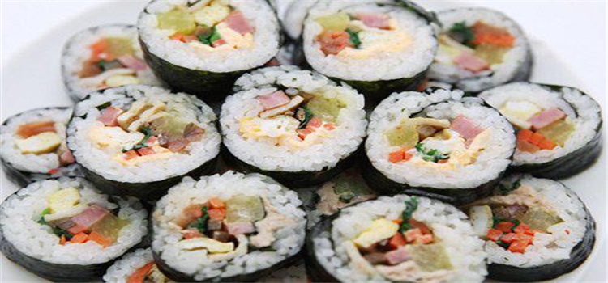
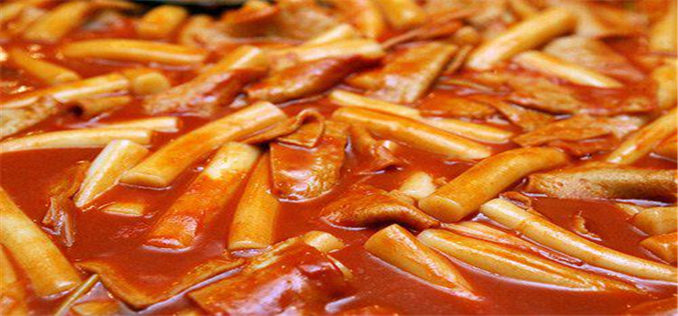
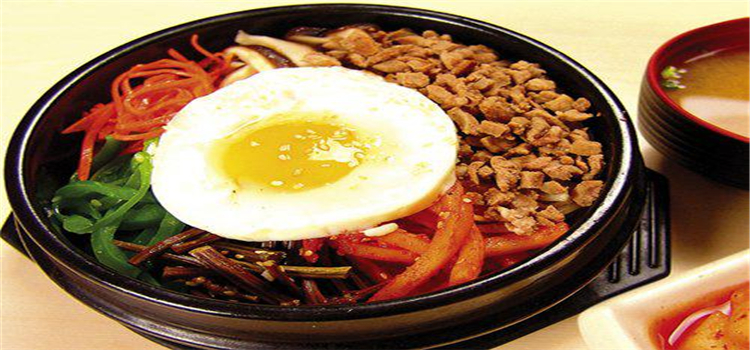

当地美食
#紫菜包饭（김밥）#
“只见女主们含情脉脉地将便当送给男主，打开一看，基本都是紫菜包饭。”这是韩剧的经典桥段，也证明了紫菜包饭是一道十分常见的韩式料理。韩国人对于海产品，诸如海带、紫菜类是非常热衷的。很多食客会觉得紫菜包饭和与日本料理中的寿司十分相似。其实，韩国的紫菜包饭正是由日本寿司演变过来的。

图：紫菜包饭
#辣炒年糕（떡볶이）#
在韩剧中，出现最多的街头小吃，非炒年糕莫属了。炒年糕是用辣椒酱、糖、葱、水翻炒而成，不油不腻，吃起來辣辣甜甜的，非常好吃。尤其是炒年糕里面的鱼饼，滋味更加鲜美。

图：辣炒年糕
#韩式拌饭#
加入了大葱、辣白菜的韩国风味煎炸类食品。对于中国人来说“煎饼”一词并不陌生，但在韩国泛指煎炸类面食和裹上小麦粉后油炸的食品。虽然根据食材的不同种类也多种多样，但以加入了大葱和海鲜的葱饼最为受欢迎。与马格利米酒搭配起来堪称一绝。

图：韩式拌饭
#泡菜#
菜是韩国最具代表性的美食之一，在韩国甚至有泡菜学校专门教大家做泡菜。泡菜是韩国最常见的一种小菜，以鲜辣著称，通常会和米饭一起伴食。想起韩剧《花样男子》男主女主戴着手套一起腌制泡菜的镜头，很是温馨。想想这也是增进感情的一个好方法。

图：泡菜
#炸酱面#
韩剧里最常出现的面，就是一碗黑乎乎的、一坨坨的炸酱面了。那裹满了酱的面条，一夹就是一大筷子，吃得满嘴、满鼻子都沾上了酱，“吃碗炸酱面也能欲仙欲死的，为什么韩国人吃东西能吃得那么香呢？”韩剧粉丝白白说，哪怕一碗白米饭，韩国人也能搞得自己很想吃。
图：炸酱面
#旋风土豆#
这个形状奇特的美食号称“旋风土豆”。它是用一种“特型刀片”将切好的土豆放入油锅中炸酥，然后再在上面撒一些调味料。价格大概在7人民币左右一串。
觅食好去处
#土俗村参鸡汤（토속촌）#
位于景福宫站的“土俗村”是首尔市内无人不知的著名参鸡汤店。特别还是卢武铉总统在世时常去的地方， 因此更加知名。赶到吃饭的时间点去的话会经常排队，但店面大，无需等待很长时间。
这里的特点在于参鸡汤肉汤中放入了30多种韩药材，味香俱全，还有店里的秘诀材料，价格在13，000韩元。 一天只吃这个就会觉得充实，味道可谓极品。参鸡汤和烤整只鸡是店里的人气料理，极受欢迎。
图：土俗村
地址：首尔钟路区体府洞85-1
营业时间：10：00~22：00（点餐截至22：00）
到达交通：地铁3号线景福宫（Gyeongbokgung）站2号出口，步行7分钟
#black’smith 新沙站店（블랙스미스 신사역점）#
“black’ smith”是韩国著名影星宋承宪经营的一家意大利餐厅。 这家店在韩国十分受欢迎，特别是二三十岁左右的年轻人居多，也有很多宋承宪的海外粉丝慕名而来。
菜单以意大利面和披萨为主，还有沙拉、汤、意大利烩饭等各色料理。料理均由专业意大利厨师在开放式厨房烹制，口感极佳，其样式诱人，色香味俱全。其中，用鱿鱼墨汁制作的意大利黑色烩饭，味道鲜美，独特，也是宋承宪最喜欢的料理之一。
图：black’smith 新沙站店
地址：首尔江南区新沙洞514-20
营业时间：周一～五11：30~24：00（点餐截至21：50）、 周日11：30~22：00（点餐截至21：30）
到达交通：地铁3号线新沙（Sinsa）站8号出口，步行1分钟
其他店铺地址
光化门站店地址：首尔特别市钟路区新门路1街；
惠化站店地址：首尔特别市钟路区明伦4街；
梨水站店地址：首尔特别市铜雀区舍堂洞；
江南站店地址：首尔特别市江南区驿三洞；
梨大店地址：首尔特别市西大门区大岘洞 33-11
#王妃家 总店（왕비집 본점）#
令人印象深刻的韩国式而又现代化的室内装潢，人气美食如调味排骨、外脊、五花肉等等的木炭烧肉菜单和猪排骨套餐，韩式烧牛肉等等的美食都是本店的著名招牌美食。
图：王妃家（总店）
地址：首尔中区忠武路2街63-3 2F
营业时间：11：30~23：00（点餐截至22：00）
到达交通：铁4号线明洞（Myeong-dong）站9号出口，步行3分钟
其他店铺地址
明洞3号店地址：首尔特别市中区忠武路1街25-6 2F
营业时间：11：30~23：00（点餐截至22：00）
到达交通：地铁4号线明洞（Myeong-dong）站6号出口，步行4分钟；
明洞2号店地址：首尔特别市中区明洞1街34-1 2F
营业时间：周一～周五11：30～23：00，周六日11：30～22：30（点餐截至22：00）
到达交通：地铁2号线乙支路入口（Euljiro1(il)-ga）站5、6号出口之间，步行4分钟
钟路店地址：首尔特别市钟路区贯铁洞12-11 2F
营业时间：11：30~23：00（点餐截至22：00）
到达交通：地铁1号线钟路3街（Jongno3(sam)-ga）站4号出口，步行约5分钟/地铁3号线安国（Anguk）站6号出口，步行约15分钟。
#姜虎东白丁 东大门店（강호동 백정 동대문점）#
对于韩国人来说，最不可缺少的就是烤肉，而旅客往往到韩国都想品尝当地最地道的烤肉。 到东大门那便一定要到“姜虎东白丁”烤肉，这家店是韩国著名主持人姜虎东旗下的一个品牌。
“白丁”在韩语里也有“平民”的意思，一语道出了这家店的特点，即这是一家价格很平民化的烤肉店。这家点的特色是来几个人就餐，便点几人份的烤肉，吃完不够还可以免费添肉，直到饱肚为止。不仅烤肉出名，这里还有怀旧便当，味道绝佳。
图：姜虎东白丁（东大门店）
地址：首尔中区乙支路6街18-37 2F
营业时间：24小时
到达交通：地铁2号线东大门历史文化公园（Dongdaemun History&Culture Park）站14号出口，步行3分钟；地铁1号线东大门（Dongdaemun）站8号出口，步行7分钟
其他店铺地址：
姜虎东678店铺地址：首尔特别市江南区新沙洞637-13
营业时间：11：30~次日03：00
到达交通：地铁盆唐线狎鸥亭罗德奥（Apgujeongrodeo）站2号出口，步行17分钟，地铁3号线狎鸥亭（Apgujeong）站。
#那度香（나도향）#
很多攻略里都有推荐的店。据说烤肉是招牌，可是吃了两餐烤肉想换换口味了，就点了部队锅。两份起卖 加点了石锅拌饭 部队锅里的午餐肉感觉比国内的要香 优点是里面有中国服务员，交流无障碍。
图：那度香
地址：首尔中区明洞2街89
营业时间：10：30~24：00（点餐截至23：30）
到达交通：地铁2号线乙支路入口（Euljiro1(il)-ga）站6号出口，步行5分钟；地铁4号线明洞（Myeong-dong）站6号出口，步行7分钟
#VivaPolo#
exo的粉丝们决不能错过的好地方—灿烈麻麻自主经营的西餐厅 “VivaPolo” 店里主营意大利面和披萨，味道超赞哦~餐厅里面还有灿烈的照片墙，灿烈儿时的baby照也有哦，fans们可以一饱眼福哈
图：VivaPolo
到达交通：地铁5号线明逸站一号出口出来，往右边看2楼即是
咖啡店/甜品店
#BananaTree花盆蛋糕 （바나나트리）#
这是一家主打‘花盆蛋糕’的店，几乎可以以假乱真的花盆蛋糕！看着可爱的小花盆盛着水果蛋糕表面洒满了可可粉，还有小铲子汤勺。是不是有眼前一亮的感觉？
图：BananaTree花盆蛋糕
地址：首尔江南区新沙洞526
营业时间：平日11：00~20：30、周六11：00~21：00、周日12：30~19：30
到达交通：地铁3号线新沙（Sinsa）站8号出口，步行10分钟
#Hello Kitty Cafe （헬로키티카페）#
Hello kitty 主题咖啡厅在首尔共有四家 ，弘大店，大学路店，新村店和三清路店。粉色系的装修风格让整间咖啡厅显得十分有爱，大大的蝴蝶结logo。是很多女孩子来韩国的必游之地。
Hello kitty 主题咖啡厅是粉色系控女生特别喜欢的地方。内部装修温馨可爱，据去过的顾客说咖啡甜点的卖相和口味也还不错。在逛街购物累了之后，来这里小憩一会，喝一杯有着hello kitty 头像的咖啡或是以hello kitty 造型的蛋糕，让疲惫的身心得到更好的放松。
图：Hello Kitty Cafe
地址：首尔西大门区沧川洞13-3 2，3F
营业时间：11：00~23：00（点餐截至22：30）
交通：地铁2号线新村（Sinchon）站3号出口，步行6分钟
#咖啡王子1号店（커피프린스1호점）#
还记得2007年的夏天吗？ 我们认识了几名可爱的咖啡王子，和他们一起笑，一起哭，一起成长。也因为这个收视率极高的电视剧，让孔侑和尹恩惠在亚洲红到发紫，让他们成为了韩流明星。位于弘大的咖啡王子一号店是电视剧的拍摄地，这是一个充满回忆的地方，每一个角落都有许多的故事，品着咖啡的香醇，走进那美好的时光吧！
图：咖啡王子1号店
地址：首尔麻浦区西桥洞337-2
营业时间：09：00~23：00（点餐截至22：30），周五、周六09：00~次日01：00（点餐截至24：00）
到达交通：地铁2号线弘大入口（Hongik Univ.）站8号出口，步行8分钟；地铁6号线上水（Sangsu）站1号出口，步行18分钟
#Meal Top（밀탑）#
Meal Top位于现代百货公司狎鸥亭本店5楼的美食街，从现代百货公司开幕以来即入驻设柜至今的刨冰专门店。 超人气商品是最基本的＂红豆牛奶冰＂，不过有别于一般的红豆牛奶冰，在刨冰上加入精心煮好的红豆及口感十足的年糕，味道极似小时候常吃的＂古早味红豆冰＂，到了冬天则会供应另一项超人气甜点＂红豆汤＂。
图：Meal Top
地址：首尔江南区狎鸥亭洞429 现代百货店 狎鸥亭总店 5F
营业时间：10：30～22：00（点餐截至21：20）
到达交通：地铁3号线狎鸥亭（Apgujeong）站6号出口相连接
#MANGO SIX （망고식스 압구정점）#
看过《绅士的品格》的人一定无法忽略MANGO SIX咖啡店的存在，它几乎是剧中出现频率最高，亮点最高的地方了！剧中人气明星张东健和金荷娜的初遇和定情都是在那里发生的。
图：MANGO SIX
地址：首尔江南区新沙洞648-13
营业时间：1层、2层 08：00~23：00 ※地下1层截至21：00（点餐截至22：00）
到达交通：地铁盆唐线狎鸥亭罗德奥（Apgujeongrodeo）站5号出口，步行9分钟；地铁3号线狎鸥亭（Apgujeong）站2号出口，步行20分钟
#Molly’s Pops#
弘大“19禁”冰淇淋店 Molly’s Pops，店内冰淇淋口味独特，均为红酒草莓、艾丁格啤酒、韩国米酒这样含有酒精口味的~据说这家店的冰淇淋中酒精含量高达40%呢~虽然这家店以卖“19禁”冰淇淋而闻名，但不喜欢酒味道的亲们也可品尝到水蜜桃等其他口味的冰淇淋。
图：Molly’s Pops
地址：首尔麻浦区西桥洞332-20
#snow spoon coffee#
店里都是含有乳酸菌的酸奶冰淇淋，外观造型十分Q，让人舍不得下口~店内冰淇淋是可DIY的，最后按照重量收费哦~running man曾在这里取景拍摄过，T-ara的智妍也曾偷偷跑来吃过~
图：snow spoon coffee
地址：首尔麻浦区西桥洞364-15 1层
到达交通：乘坐地铁2号线弘大出口站9号出口
#Cofioca#
店面虽小，却有超多的明星光顾[心]店内有exo，少女时代等众多人气明星的签名[花心]是饭们偶遇欧巴的不错选择哦~
图：Cofioca
地址：首尔江南区新沙洞659-9 慧成大厦1楼
到达交通：盆塘线狎鸥亭奥德罗站6号出口出来直走，看到悦诗风吟卖场左拐，直走到everything这栋楼从右边胡同进去在GS25便利店旁边~
米其林星级餐厅
#가온 （GAON）——韩式料理#
人均消费：18万~25万韩元
地址：首尔江南区岛山大路317 HORIM艺术中心 MF（M层）
서울특별시 강남구 도산대로 317 호림아트센터 MF（M층）
电话：（02）545-9845
图：GAON 韩式料理
#라연（罗宴）——韩式料理#
人均消费：9.8万~23万韩元
地址：首尔中区东湖路 249 新罗酒店 23F
서울특별시 중구 동호로 249 신라호텔 23F
电话：（02）2230-3367
图：罗宴 韩式料理
#권숙수（Kwonsooksoo）——韩式料理#
人均消费：5.5万~15万韩元
地址：首尔江南区彦州路170街 27 2F
서울특별시 강남구 언주로170길 27 2F
电话：（02）542-6268
图：Kwonsooksoo 韩式料理
#라미띠에（L‘amitie）——法式料理#
人均消费：4.5万~15万韩元
地址： 首尔江南区彦州路153街 7 2F
서울특별시 강남구 언주로153길 7 2F
电话：（02）546-9621
图： L‘amitie 法式料理
#리스토란테 에오（Ristorante Eo）——现代意式料理#
人均消费：4.5万~12.8万韩元
地址： 首尔江南区岛山大路91街 43
서울특별시 강남구 도산대로81길 43
电话：（02）3445-1926
图：Ristorante Eo
#밍글스（mingles）——现代韩式料理#
人均消费：5.5万~15万韩元
地址： 首尔江南区宣陵路 757 1F
서울특별시 강남구 선릉로 757 1F
电话：（02）515-7306